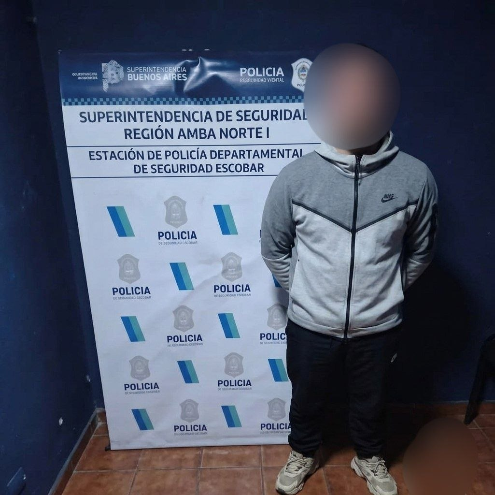
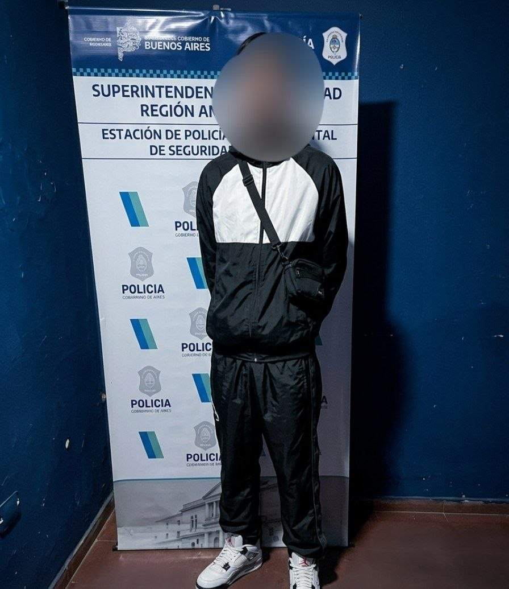
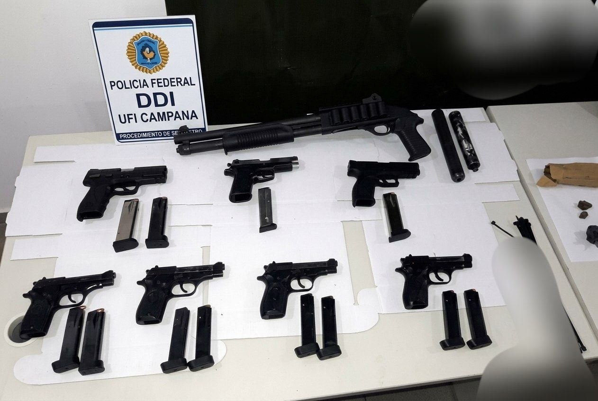
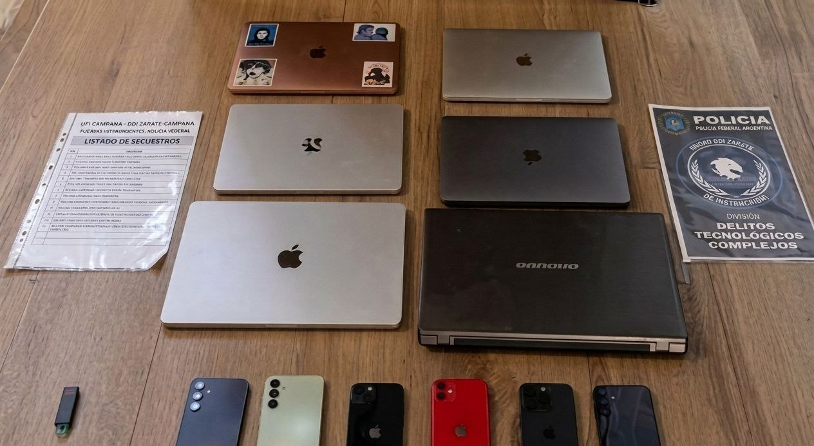
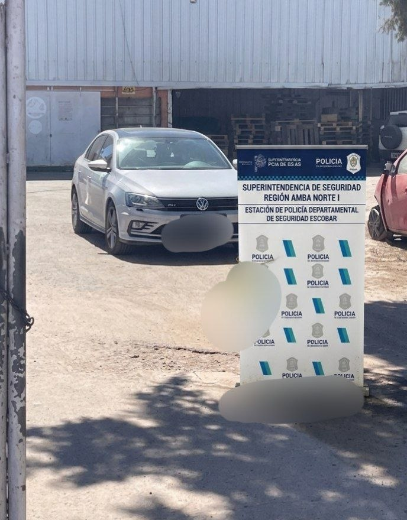

En un megaoperativo conjunto realizado en las primeras horas de la mañana, efectivos de la Policía Federal Argentina (PFA) y la Dirección Departamental de Investigaciones (DDI) lograron desbaratar una peligrosa organización criminal que operaba con una alarmante diversificación de delitos, un alto poder de fuego y que financiaba una vida de excentricidades y lujos desmedidos en la zona oeste y norte de la Provincia de Buenos Aires.
Los detenidos, dos amigos con un amplio prontuario delictivo que operaban en las sombras del entorno digital, fueron identificados como Lautaro Ivan, de 21 años y conocido en el mundo del hampa bajo el alias de "33DiscosDuros", y Javier Leandro, de 26 años, apodado "DoctorDry".


Las capturas se dieron de forma coordinada este 16 de septiembre en distintos puntos del conurbano bonaerense. El primer golpe tuvo lugar a las 7:30 de la mañana en la exclusiva localidad de Villa Rosa, partido de Pilar (Zona Norte), donde tras reventar una puerta de seguridad, fue interceptado y detenido Javier ("Dry"). Apenas media hora más tarde, a las 8:00 am, las fuerzas de seguridad allanaron un domicilio fuertemente custodiado en el partido de Ituzaingó (Zona Oeste), donde lograron dar con Lautaro ("33"). Ambos quedaron a total disposición de la Fiscalía Federal de Campana, que lleva adelante la voluminosa causa.
Hackers y estafadores: El cerebro informático de la banda
El modus operandi de la dupla en el ámbito digital era altamente sofisticado, impulsado principalmente por los conocimientos técnicos de Lautaro. Según fuentes exclusivas de la investigación, "33" es un hábil programador y experto en hacking que se encargaba de diseñar la estructura virtual y el blindaje cibernético de la organización. A través de campañas publicitarias engañosas (ADS) en internet y redes sociales, atraían a sus víctimas ofreciendo falsos descuentos comerciales. Una vez que los usuarios hacían clic en los enlaces apócrifos, utilizaban técnicas avanzadas de phishing desarrolladas por el propio Lautaro para robar sus credenciales bancarias y personales en cuestión de segundos.
El negocio virtual iba mucho más allá de las estafas menores. Los investigadores especializados en cibercrimen descubrieron que los detenidos habían logrado vulnerar y acceder ilegítimamente a bases de datos oficiales del Registro Nacional de las Personas (RENAPER) y a registros masivos de números de tarjetas de crédito. Esta información sumamente sensible era comercializada en el mercado negro a través de la aplicación de mensajería Telegram. Aprovechando sus conocimientos en programación, "33" había desarrollado un bot informático completamente automatizado, capaz de brindar información personal y crediticia de ciudadanos de toda la Argentina de forma instantánea a cambio de pagos en criptomonedas, dificultando el rastreo del dinero.
Drogas de diseño y secuestros
El ciberdelito era solo la punta del iceberg y uno de los frentes financieros de la organización. La otra gran pata de la estructura criminal residía en el narcotráfico a gran escala. Según detallaron fuentes del caso a Diario Noticias, la banda comercializaba una amplia variedad de sustancias ilícitas, con fuerte foco en el circuito de las fiestas electrónicas VIP: tussi (conocida como la cocaína rosa), cocaína tradicional de máxima pureza, marihuana, éxtasis y ketamina.
Dentro del esquema narco, "Dry" (Javier) cumplía un rol jerárquico estratégico: no vendía al menudeo ni trataba directamente con los consumidores finales, sino que operaba como el gran proveedor mayorista encargado de abastecer a los "dealers" y distribuidores de la zona oeste.
En paralelo, la Fiscalía de Campana investiga profundamente la participación activa de ambos en secuestros extorsivos, donde retenían a personas bajo amenazas de muerte para exigir millonarias sumas de dinero en efectivo a cambio de su liberación. Al momento de la irrupción táctica policial en las viviendas, las autoridades confirmaron que, afortunadamente, no se hallaron víctimas en cautiverio temporal.
Vida de magnates, un arsenal táctico y el origen de la caída
El producto de esta prolífica y diversificada actividad criminal les permitía a los jóvenes llevar una vida de lujos exorbitantes. Viajes internacionales de imprevisto, vehículos de alta gama, ropa de diseñador exclusiva y un manejo de inmensas cantidades de dinero en efectivo formaban parte de su rutina diaria. Sin embargo, este mismo perfil ostentoso y temerario terminó llamando la atención de los investigadores.
La investigación que culminó hoy en la detención de "33" y "Dry" demandó más de cuatro meses de exhaustivas tareas investigativas encubiertas, escuchas telefónicas y seguimiento satelital. La pesquisa se originó a partir de una serie de denuncias anónimas radicadas en una aplicación móvil utilizada habitualmente por la comunidad de las fiestas rave, lo que puso a los detectives tras la pista de los inusuales movimientos de los sospechosos en la escena de la música electrónica underground.
Al irrumpir violentamente en los domicilios de Ituzaingó y Pilar, el personal policial constató el poder ofensivo militar que custodiaba a la organización. En el lugar se secuestró un verdadero arsenal listo para abrir fuego en cualquier momento.
El material incautado (Detallado)


Durante la inspección de los búnkers allanados, el personal policial logró confiscar una abrumadora cantidad de elementos probatorios que complican la situación judicial de los detenidos:
- Vehículos: Un automóvil Volkswagen Vento GLI (modelo 2018), modificado y utilizado para los traslados veloces y la logística criminal pesada.
- Armamento: Un arsenal táctico de guerra que incluye una pistola Glock calibre .40, una mortífera pistola FN Five-seveN (capaz de perforar chalecos antibalas), una escopeta táctica de repetición calibre 12/70, un letal fusil AR-15 Sport calibre .22, y una pistola calibre .45 ACP, junto con una alarmante cantidad de municiones y cargadores extendidos.
- Dinero: Millonarias sumas de dinero en efectivo, contabilizando fajos de billetes termosellados de 10.000 y 20.000 pesos argentinos, además de gruesos fajos de dólares estadounidenses.
- Tecnología cibernética: 6 computadoras portátiles (laptops) con encriptación avanzada y 6 teléfonos celulares de última generación empleados para las estafas virtuales.
- Drogas: Diversas dosis de estupefacientes ya fraccionados en bolsas tipo ziploc listos para la reventa inmediata (tussi, cocaína, marihuana, éxtasis y ketamina).
- Otros elementos: Terminales de pago POSNET inalámbricas y carpetas con evidencia de bases de datos impresas ilegalmente del RENAPER.
Los dos detenidos permanecen alojados e incomunicados en sede policial de máxima seguridad y serán indagados en las próximas horas bajo las severas acusaciones penales por estafas reiteradas, falsificación y venta ilegítima de bases de datos, infracción a la Ley de Drogas (23.737), secuestro extorsivo, lavado de activos y tenencia ilegal de armas de guerra. La fiscalía no descarta que en los próximos días haya nuevos allanamientos para capturar a los eslabones menores de la banda.
El producto de esta prolífica actividad criminal, según consta en el expediente, les permitía a los jóvenes llevar una vida de lujos ostentosos y sostener una rápida movilidad para sus operaciones ilícitas. Durante los procedimientos, los efectivos incautaron un automóvil de alta gama Volkswagen Vento GLI modelo 2018, el cual, según los peritos financieros de la policía, era utilizado como logística central de la banda y había sido adquirido directamente con el dinero lavado, proveniente íntegramente del ciberdelito y el narcotráfico.
Además de los vehículos, los delincuentes custodiaban sus operaciones clandestinas con el ya mencionado arsenal de guerra preparado para posibles enfrentamientos armados contra bandas rivales o fuerzas de seguridad, el cual afortunadamente fue decomisado en su totalidad antes de ser disparado.
